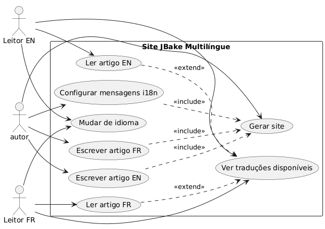
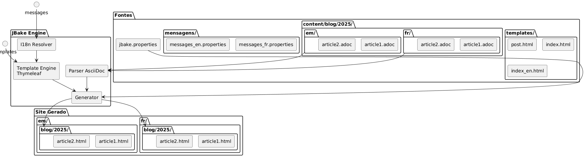
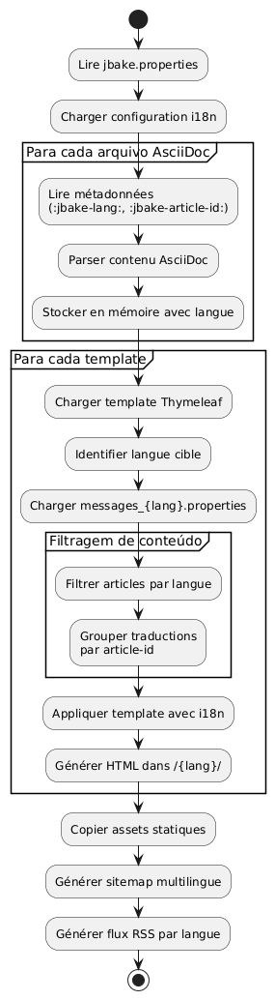

Internacionalização de um site estático JBake com Thymeleaf
Publié le 20 October 2025
Introdução
A internacionalização (i18n) de um site estático pode parecer complexa à primeira vista, mas o JBake combinado com o Thymeleaf oferece soluções elegantes para criar um site multilíngue. Neste artigo, vou mostrar como implementei o i18n no meu blog, cobrindo tanto o templating quanto a gestão dos artigos em vários idiomas.
Diagrama de caso de uso (Use Case)

Arquitetura da internacionalização
Nossa abordagem baseia-se em dois pilares :
-
O i18n do templating: utilização dos arquivos de mensagens Thymeleaf para os elementos da interface
-
O i18n do conteúdo: organização dos artigos por língua em uma estrutura de pastas dedicada
Diagrama de estrutura (Organização dos arquivos)

Por que essa abordagem?
Esta separação permite:
-
Manter a consistência na interface, independentemente do idioma.
-
Gerir independentemente o conteúdo e as traduções de artigos
-
Facilitar a adição de novas línguas sem refatoração maior
-
Permitir artigos disponíveis apenas em certas línguas
Diagrama de componentes

I18n do templating com Thymeleaf
Estrutura dos arquivos de mensagens
O primeiro passo consiste em criar os arquivos de propriedades para cada idioma suportado :
src/jbake/templates/
├── messages.properties # Fallback par défaut
├── messages_fr.properties # Français
├── messages_en.properties # Anglais
└── messages_de.properties # AllemandConteúdo dos arquivos de mensagens
Aqui está um exemplo de arquivo`messages_fr.properties`:
# Navigation
nav.home=Accueil
nav.blog=Blog
nav.about=À propos
nav.contact=Contact
# Articles
article.readmore=Lire la suite
article.published=Publié le
article.tags=Étiquettes
article.also.available=Également disponible en
# Interface
site.title=Mon Blog Technique
site.description=Partage de connaissances et expériences
footer.copyright=© 2025 Tous droits réservés
search.placeholder=Rechercher un article...E seu equivalente em inglês`messages_en.properties`:
# Navigation
nav.home=Home
nav.blog=Blog
nav.about=About
nav.contact=Contact
# Articles
article.readmore=Read more
article.published=Published on
article.tags=Tags
article.also.available=Also available in
# Interface
site.title=My Tech Blog
site.description=Sharing knowledge and experiences
footer.copyright=© 2025 All rights reserved
search.placeholder=Search articles...Utilização nos templates
Nos seus templates Thymeleaf, utilize a sintaxe`#{}`para acessar as mensagens :
<!DOCTYPE html>
<html xmlns:th="http://www.thymeleaf.org">
<head>
<title th:text="#{site.title}">Mon Blog</title>
<meta name="description" th:content="#{site.description}" />
</head>
<body>
<nav>
<a th:href="@{/}" th:text="#{nav.home}">Accueil</a>
<a th:href="@{/blog/}" th:text="#{nav.blog}">Blog</a>
<a th:href="@{/about.html}" th:text="#{nav.about}">À propos</a>
</nav>
<footer>
<p th:text="#{footer.copyright}">Copyright</p>
</footer>
</body>
</html>Diagrama de sequência - Resolução i18n
Failed to generate image: PlantUML preprocessing failed: [From <input> (line 5) ]
@startuml
actor Auteur
participant JBake
participant "AsciiDoc\nAnalisador" as parser
participant "Thymeleaf
^^^^^
Syntax Error? (Assumed diagram type: sequence)
@startuml
actor Auteur
participant JBake
participant "AsciiDoc\nAnalisador" as parser
participant "Thymeleaf
Motor" as thymeleaf
participant "I18n\nResolver" as i18n
database "messages_*.properties" as messages
Auteur -> JBake: jbake -b
activate JBake
JBake -> parser: Lire article.fr.adoc
activate parser
parser --> JBake: Contenu + métadonnées\n(lang=fr, article-id=xyz)
deactivate parser
JBake -> parser: Lire article.en.adoc
activate parser
parser --> JBake: Contenu + métadonnées\n(lang=en, article-id=xyz)
deactivate parser
JBake -> thymeleaf: Générer page FR
activate thymeleaf
thymeleaf -> i18n: Résoudre #{nav.home}
activate i18n
i18n -> messages: Lire messages_fr.properties
messages --> i18n: "Início"
i18n --> thymeleaf: "Início"
deactivate i18n
thymeleaf -> JBake: Rechercher traductions\n(article-id=xyz, lang!=fr)
JBake --> thymeleaf: article.en.html trouvé
thymeleaf --> JBake: /fr/blog/article.html
deactivate thymeleaf
JBake -> thymeleaf: Générer page EN
activate thymeleaf
thymeleaf -> i18n: Résoudre #{nav.home}
activate i18n
i18n -> messages: Lire messages_en.properties
messages --> i18n: "Início"
i18n --> thymeleaf: "Início"
deactivate i18n
thymeleaf -> JBake: Rechercher traductions\n(article-id=xyz, lang!=en)
JBake --> thymeleaf: article.fr.html trouvé
thymeleaf --> JBake: /en/blog/article.html
deactivate thymeleaf
JBake --> Auteur: Site généré
deactivate JBake
@enduml
Configuração da localidade no JBake
No seu arquivo`jbake.properties`, defina a localidade padrão :
# Locale par défaut
thymeleaf.locale=fr
# Encodage
template.encoding=UTF-8I18n dos artigos: organização por pastas
Diagrama de fluxo (Fluxo) - Geração

Estrutura das pastas
Em vez de usar sufixos nos nomes de arquivos, optei por uma organização por pastas que oferece mais clareza e manutenibilidade :
content/blog/
├── 2024/
│ ├── fr/
│ │ ├── introduction-jbake.adoc
│ │ ├── guide-thymeleaf.adoc
│ │ └── astuces-asciidoc.adoc
│ └── en/
│ ├── introduction-jbake.adoc
│ ├── thymeleaf-guide.adoc
│ └── asciidoc-tips.adoc
└── 2025/
├── fr/
│ └── internationalisation-jbake.adoc
└── en/
└── jbake-internationalization.adocVantagens desta abordagem
Esta estrutura apresenta várias vantagens:
-
Separação clara: cada língua tem seu próprio espaço
-
Nomenclatura flexível: os arquivos podem ter nomes diferentes dependendo do idioma
-
Escalabilidadefácil de adicionar um novo idioma
-
Organização naturalsegue a lógica temporal de JBake
Metadados dos artigos
Cada artigo deve conter metadados para permitir a ligação entre traduções. Aqui está um exemplo:
Versão francesa(2025/fr/internationalisation-jbake.adoc) :
= Internationalisation d'un site statique JBake
:jbake-type: post
:jbake-status: published
:jbake-date: 2025-10-20
:jbake-lang: fr
:jbake-article-id: jbake-i18n-thymeleaf
:jbake-tags: jbake, thymeleaf, i18n
:jbake-description: Guide pour mettre en place l'i18n avec JBakeVersão inglesa(2025/en/jbake-internationalization.adoc) :
= Internationalizing a JBake Static Site
:jbake-type: post
:jbake-status: published
:jbake-date: 2025-10-20
:jbake-lang: en
:jbake-article-id: jbake-i18n-thymeleaf
:jbake-tags: jbake, thymeleaf, i18n
:jbake-description: Guide to implement i18n with JBakeNOTA: O atributo`:jbake-article-id:`é crucial: ele permite ligar as diferentes traduções do mesmo artigo.
Configuração das URLs
Dentro`jbake.properties`, configure o padrão de URL para incluir o idioma :
# Pattern d'URL avec langue
post.permalink.pattern=:lang/blog/:year/:name.html
# Langue par défaut
site.default.lang=frIsso gerará URLs do tipo:
-
/fr/blog/2025/internationalisation-jbake.html -
/en/blog/2025/jbake-internationalization.html
Modelos para a exibição multilíngue
Template de artigo com seletor de idioma
Crie um modelo`post.html`exibe as traduções disponíveis :
<!DOCTYPE html>
<html xmlns:th="http://www.thymeleaf.org">
<head>
<title th:text="${content.title}">Article</title>
</head>
<body>
<article>
<header>
<h1 th:text="${content.title}">Titre</h1>
<div class="article-meta">
<time th:text="${#dates.format(content.date, 'dd MMMM yyyy')}"
th:attr="datetime=${#dates.format(content.date, 'yyyy-MM-dd')}">
Date
</time>
<!-- Sélecteur de traductions -->
<div class="translations" th:if="${content['article-id']}">
<span th:text="#{article.also.available}">Aussi disponible en :</span>
<ul class="language-list">
<li th:each="post : ${published_posts}"
th:if="${post['article-id'] == content['article-id'] and post.lang != content.lang}">
<a th:href="${post.uri}"
th:text="${post.lang.toUpperCase()}">
LANG
</a>
</li>
</ul>
</div>
</div>
</header>
<div class="content" th:utext="${content.body}">
Contenu de l'article
</div>
<footer class="article-footer">
<div class="tags" th:if="${content.tags}">
<span th:text="#{article.tags}">Étiquettes :</span>
<span th:each="tag : ${content.tags}">
<a th:href="@{/tags/{tag}.html(tag=${tag})}"
th:text="${tag}">tag</a>
</span>
</div>
</footer>
</article>
</body>
</html>Índice filtrado por idioma
Crie modelos de índice para cada idioma :
index.html(índice français) :
<!DOCTYPE html>
<html xmlns:th="http://www.thymeleaf.org">
<head>
<title th:text="#{site.title}">Mon Blog</title>
</head>
<body>
<main>
<h1 th:text="#{nav.blog}">Blog</h1>
<div class="articles-list">
<article th:each="post : ${published_posts}"
th:if="${post.lang == 'fr'}">
<h2>
<a th:href="${post.uri}" th:text="${post.title}">Titre</a>
</h2>
<time th:text="${#dates.format(post.date, 'dd MMMM yyyy')}">
Date
</time>
<p th:text="${post.description}">Description</p>
<a th:href="${post.uri}" th:text="#{article.readmore}">
Lire la suite
</a>
</article>
</div>
</main>
</body>
</html>index_en.html(índice anglais) :
<!DOCTYPE html>
<html xmlns:th="http://www.thymeleaf.org">
<head>
<title th:text="#{site.title}">My Blog</title>
</head>
<body>
<main>
<h1 th:text="#{nav.blog}">Blog</h1>
<div class="articles-list">
<article th:each="post : ${published_posts}"
th:if="${post.lang == 'en'}">
<h2>
<a th:href="${post.uri}" th:text="${post.title}">Title</a>
</h2>
<time th:text="${#dates.format(post.date, 'dd MMMM yyyy')}">
Date
</time>
<p th:text="${post.description}">Description</p>
<a th:href="${post.uri}" th:text="#{article.readmore}">
Read more
</a>
</article>
</div>
</main>
</body>
</html>Navegação entre idiomas
Seletor de idioma global
Diagrama de fluxo - Leitura do usuário

Adicione um seletor de idioma no seu template principal :
<nav class="language-switcher">
<a href="/index.html"
th:classappend="${content.lang == 'fr'} ? 'active'"
title="Français">
🇫🇷 FR
</a>
<a href="/en/index.html"
th:classappend="${content.lang == 'en'} ? 'active'"
title="English">
🇬🇧 EN
</a>
</nav>Estilo CSS para o seletor
.language-switcher {
display: flex;
gap: 1rem;
padding: 0.5rem;
background: #f5f5f5;
border-radius: 4px;
}
.language-switcher a {
padding: 0.5rem 1rem;
text-decoration: none;
color: #333;
border-radius: 4px;
transition: background 0.2s;
}
.language-switcher a:hover {
background: #e0e0e0;
}
.language-switcher a.active {
background: #007bff;
color: white;
}
.translations {
margin: 1rem 0;
padding: 1rem;
background: #f8f9fa;
border-left: 4px solid #007bff;
}
.language-list {
display: inline-flex;
gap: 0.5rem;
list-style: none;
padding: 0;
margin: 0;
}
.language-list li::after {
content: "•";
margin-left: 0.5rem;
}
.language-list li:last-child::after {
content: "";
}Feed RSS por idioma
Para ter feeds RSS separados por idioma, crie modelos distintos:
feed.xml(fluxo francês) :
<?xml version="1.0" encoding="UTF-8"?>
<rss version="2.0" xmlns:th="http://www.thymeleaf.org">
<channel>
<title th:text="#{site.title}">Mon Blog</title>
<link th:text="${config.site_host}">http://example.com</link>
<description th:text="#{site.description}">Description</description>
<language>fr</language>
<item th:each="post : ${published_posts}"
th:if="${post.lang == 'fr'}">
<title th:text="${post.title}">Titre</title>
<link th:text="${config.site_host + post.uri}">Lien</link>
<pubDate th:text="${#dates.format(post.date, 'EEE, dd MMM yyyy HH:mm:ss Z')}">
Date
</pubDate>
<description th:text="${post.description}">Description</description>
</item>
</channel>
</rss>Boas práticas e dicas
1. Coerência dos identificadores de artigo
Certifique-se de que`:jbake-article-id:`é idêntico para todas as traduções de um mesmo artigo. Utilize um formato consistente:
-
Prefira os identificadores em inglês para universalidade.
-
Use hífens para separar as palavras
-
Evite os caracteres especiais
2. Datas coerentes
Todas as traduções de um artigo devem ter a mesma data de publicação (:jbake-date:) Isso facilita a classificação e a exibição cronológica.
3. Tags multilíngues
Para as tags, você tem duas opções:
Opção 1: Tags universais em inglês
:jbake-tags: java, spring-boot, microservicesOpção 2 : Tags traduzidas com mapeamento
# Version française
:jbake-tags: java, spring-boot, microservices
# Version anglaise
:jbake-tags: java, spring-boot, microservices4. Gerenciamento dos artigos não traduzidos
Não é obrigatório traduzir todos os artigos. Se um artigo existir apenas em uma língua, ele simplesmente não aparecerá nas listas da outra língua.
5. Mapa do site multilíngue
Gere um sitemap que inclua todas as línguas :
<?xml version="1.0" encoding="UTF-8"?>
<urlset xmlns="http://www.sitemaps.org/schemas/sitemap/0.9"
xmlns:xhtml="http://www.w3.org/1999/xhtml"
xmlns:th="http://www.thymeleaf.org">
<url th:each="post : ${published_posts}">
<loc th:text="${config.site_host + post.uri}">URL</loc>
<lastmod th:text="${#dates.format(post.date, 'yyyy-MM-dd')}">Date</lastmod>
<!-- Liens alternatifs pour les traductions -->
<xhtml:link th:each="translation : ${published_posts}"
th:if="${translation['article-id'] == post['article-id'] and translation.lang != post.lang}"
rel="alternate"
th:attr="hreflang=${translation.lang},href=${config.site_host + translation.uri}" />
</url>
</urlset>Conclusão
A internacionalização de um site JBake com Thymeleaf é uma abordagem robusta e manutenível. Separando o i18n do templating (via os arquivos de mensagens) e o i18n do conteúdo (via a organização em pastas), você obtém um sistema flexível que pode evoluir facilmente.
Os pontos-chave a reter :
-
Arquivos de mensagens Thymeleafpara a interface do usuário
-
Organização por pastas(ano/idioma) para os artigos
-
Identificadores do artigopara vincular as traduções
-
Modelos dedicadospara cada língua
-
URLs explícitasincluindo o código de idioma
Diagrama de implantação
Failed to generate image: PlantUML preprocessing failed: [From <input> (line 14) ]
@startuml
node "Máquina de desenvolvimento" {
artifact "Fontes" {
folder "contenu/"
folder "modelos/"
folder "ativos/"
}
component "JBake CLI" as jbake
Sources --> jbake : jbake -b
}
node "Servidor de build
^^^^^
Syntax Error? (Assumed diagram type: component)
@startuml
node "Máquina de desenvolvimento" {
artifact "Fontes" {
folder "contenu/"
folder "modelos/"
folder "ativos/"
}
component "JBake CLI" as jbake
Sources --> jbake : jbake -b
}
node "Servidor de build
(CI/CD)" {
component "GitHub Actions
ou GitLab CI" as ci
jbake --> ci : push
}
cloud "CDN / Hospedagem" {
node "Servidor Web Estático" {
artifact "Site gerado" {
folder "/pt/blog/"
folder "/en/blog/"
folder "/assets/"
}
}
}
ci --> "Site gerado" : déploiement
actor "Leitores" as users
users --> "Servidor Web Estático" : HTTPS
@enduml
Esta arquitetura permite que você comece simplesmente com dois idiomas e adicione outros sem grandes refatorações. Tudo permanece totalmente estático e performante, fiel à filosofia do JBake.
Bom desenvolvimento multilíngue! 🌍